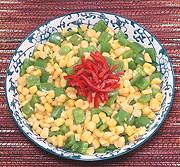

|
Sweetcorn with PeppersChina, Sichuan - Qingjiao Yumi | ||||
| Makes: Effort: Sched: DoAhead: |
2 cups ** 15 min Yes |
A side dish found in casual restaurants and home kitchens in Sichuan. Corn is not held in high regard in China - its foreign - relegated to the poor. | |||
|
1-1/2 5-1/2 2 1/3 |
c oz T t |
Corn Kernels (1) Sweet Peppers (2) Oil Salt |
Prep - (7 min (with canned corn))
|